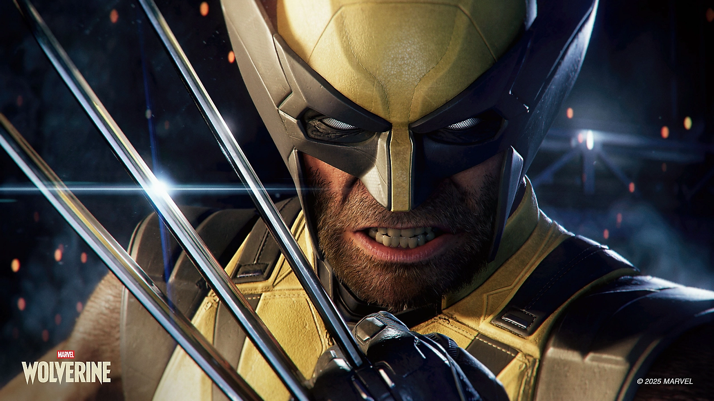

PlayStationMarvel’s Wolverine chega em 2026!
Marvel's Wolverine é um jogo de ação-aventura desenvolvido pela Insomniac Games e publicado pela Sony Interactive Entertainment. O jogo é baseado no personagem icônico da Marvel, e promete uma narrativa original, explorando os mistérios do passado de Wolverine